Domain and Range
Horror and thriller movies are both popular and, very often, extremely profitable. When big-budget actors, shooting locations, and special effects are included, however, studios count on even more viewership to be successful. Consider five major thriller/horror entries from the early 2000s—I am Legend, Hannibal, The Ring, The Grudge, and The Conjuring. Figure 1 shows the amount, in dollars, each of those movies grossed when they were released as well as the ticket sales for horror movies in general by year. Notice that we can use the data to create a function of the amount each movie earned or the total ticket sales for all horror movies by year. In creating various functions using the data, we can identify different independent and dependent variables, and we can analyze the data and the functions to determine the domain and range. In this section, we will investigate methods for determining the domain and range of functions such as these.
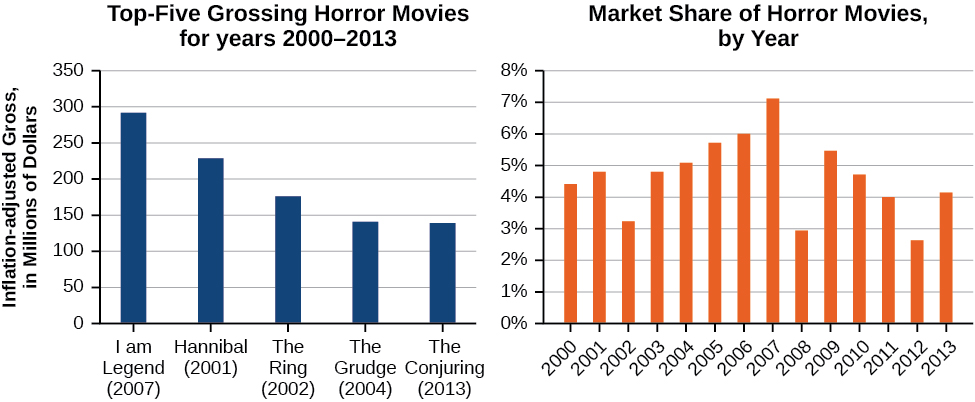
Finding the Domain of a Function Defined by an Equation
In Functions and Function Notation, we were introduced to the concepts of domain and range. In this section, we will practice determining domains and ranges for specific functions. Keep in mind that, in determining domains and ranges, we need to consider what is physically possible or meaningful in real-world examples, such as tickets sales and year in the horror movie example above. We also need to consider what is mathematically permitted. For example, we cannot include any input value that leads us to take an even root of a negative number if the domain and range consist of real numbers. Or in a function expressed as a formula, we cannot include any input value in the domain that would lead us to divide by 0.
We can visualize the domain as a “holding area” that contains “raw materials” for a “function machine” and the range as another “holding area” for the machine’s products. See Figure 2.
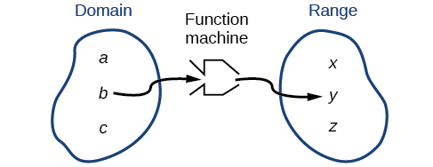
We can write the domain and range in interval notation, which uses values within brackets to describe a set of numbers. In interval notation, we use a square bracket [ when the set includes the endpoint and a parenthesis ( to indicate that the endpoint is either not included or the interval is unbounded. For example, if a person has $100 to spend, they would need to express the interval that is more than 0 and less than or equal to 100 and write We will discuss interval notation in greater detail later.
Let’s turn our attention to finding the domain of a function whose equation is provided. Oftentimes, finding the domain of such functions involves remembering three different forms. First, if the function has no denominator or an odd root, consider whether the domain could be all real numbers. Second, if there is a denominator in the function’s equation, exclude values in the domain that force the denominator to be zero. Third, if there is an even root, consider excluding values that would make the radicand negative.
Before we begin, let us review the conventions of interval notation:
- The smallest term from the interval is written first.
- The largest term in the interval is written second, following a comma.
- Parentheses, ( or ), are used to signify that an endpoint is not included, called exclusive.
- Brackets, [ or ], are used to indicate that an endpoint is included, called inclusive.
See Figure 3 for a summary of interval notation.

Finding the Domain of a Function as a Set of Ordered Pairs
Find the domain of the following function: .
Solution
First identify the input values. The input value is the first coordinate in an ordered pair. There are no restrictions, as the ordered pairs are simply listed. The domain is the set of the first coordinates of the ordered pairs.
Finding the Domain of a Function
Find the domain of the function
Solution
The input value, shown by the variable in the equation, is squared and then the result is lowered by one. Any real number may be squared and then be lowered by one, so there are no restrictions on the domain of this function. The domain is the set of real numbers.
In interval form, the domain of is
Finding the Domain of a Function Involving a Denominator
Find the domain of the function
Solution
When there is a denominator, we want to include only values of the input that do not force the denominator to be zero. So, we will set the denominator equal to 0 and solve for
Now, we will exclude 2 from the domain. The answers are all real numbers where or We can use a symbol known as the union, to combine the two sets. In interval notation, we write the solution:

In interval form, the domain of is
Finding the Domain of a Function with an Even Root
Find the domain of the function
Solution
When there is an even root in the formula, we exclude any real numbers that result in a negative number in the radicand.
Set the radicand greater than or equal to zero and solve for
Now, we will exclude any number greater than 7 from the domain. The answers are all real numbers less than or equal to or
Using Notations to Specify Domain and Range
In the previous examples, we used inequalities and lists to describe the domain of functions. We can also use inequalities, or other statements that might define sets of values or data, to describe the behavior of the variable in set-builder notation. For example, describes the behavior of in set-builder notation. The braces are read as “the set of,” and the vertical bar | is read as “such that,” so we would read as “the set of x-values such that 10 is less than or equal to and is less than 30.”
Figure 5 compares inequality notation, set-builder notation, and interval notation.

To combine two intervals using inequality notation or set-builder notation, we use the word “or.” As we saw in earlier examples, we use the union symbol, to combine two unconnected intervals. For example, the union of the sets and is the set It is the set of all elements that belong to one or the other (or both) of the original two sets. For sets with a finite number of elements like these, the elements do not have to be listed in ascending order of numerical value. If the original two sets have some elements in common, those elements should be listed only once in the union set. For sets of real numbers on intervals, another example of a union is
Describing Sets on the Real-Number Line
Describe the intervals of values shown in Figure 6 using inequality notation, set-builder notation, and interval notation.
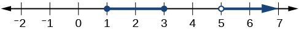
Solution
To describe the values, included in the intervals shown, we would say, “ is a real number greater than or equal to 1 and less than or equal to 3, or a real number greater than 5.”
| Inequality | |
| Set-builder notation | |
| Interval notation |
Remember that, when writing or reading interval notation, using a square bracket means the boundary is included in the set. Using a parenthesis means the boundary is not included in the set.
Finding Domain and Range from Graphs
Another way to identify the domain and range of functions is by using graphs. Because the domain refers to the set of possible input values, the domain of a graph consists of all the input values shown on the x-axis. The range is the set of possible output values, which are shown on the y-axis. Keep in mind that if the graph continues beyond the portion of the graph we can see, the domain and range may be greater than the visible values. See Figure 8.
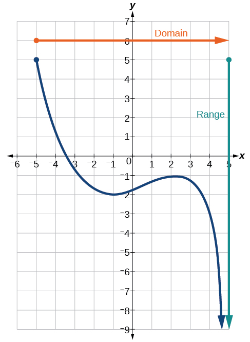
We can observe that the graph extends horizontally from to the right without bound, so the domain is The vertical extent of the graph is all range values and below, so the range is Note that the domain and range are always written from smaller to larger values, or from left to right for domain, and from the bottom of the graph to the top of the graph for range.
Finding Domain and Range from a Graph
Find the domain and range of the function whose graph is shown in Figure 9.
![Graph of a function from (-3, 1].](../../media/CNX_Precalc_Figure_01_02_007-940d.jpg)
Solution
We can observe that the horizontal extent of the graph is –3 to 1, so the domain of is
The vertical extent of the graph is 0 to –4, so the range is See Figure 10.
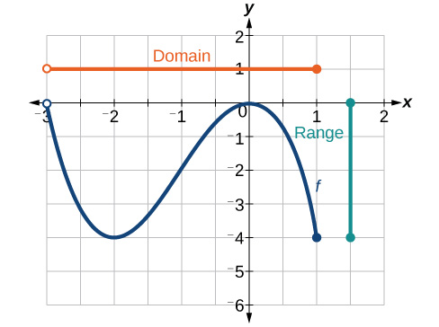
Finding Domain and Range from a Graph of Oil Production
Find the domain and range of the function whose graph is shown in Figure 11.
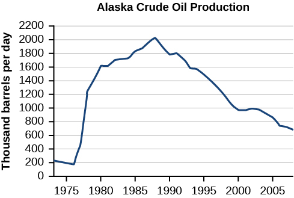
Solution
The input quantity along the horizontal axis is “years,” which we represent with the variable for time. The output quantity is “thousands of barrels of oil per day,” which we represent with the variable for barrels. The graph may continue to the left and right beyond what is viewed, but based on the portion of the graph that is visible, we can determine the domain as and the range as approximately
In interval notation, the domain is [1973, 2008], and the range is about [180, 2010]. For the domain and the range, we approximate the smallest and largest values since they do not fall exactly on the grid lines.
Finding Domains and Ranges of the Toolkit Functions
We will now return to our set of toolkit functions to determine the domain and range of each.


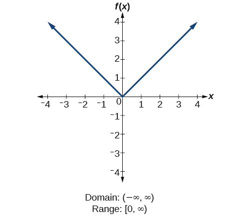
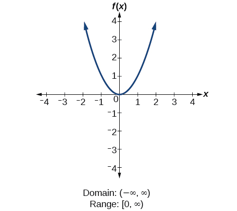
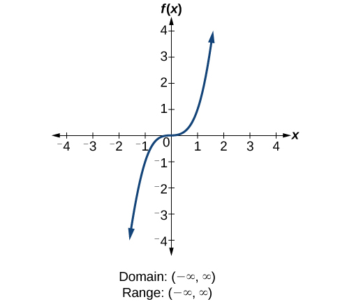
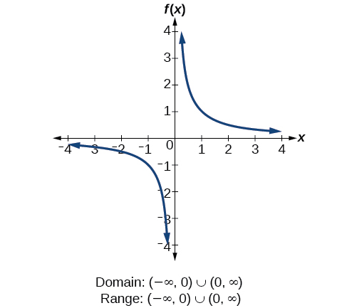


Finding the Domain and Range Using Toolkit Functions
Find the domain and range of
Solution
There are no restrictions on the domain, as any real number may be cubed and then subtracted from the result.
The domain is and the range is also
Finding the Domain and Range
Find the domain and range of
Solution
We cannot evaluate the function at because division by zero is undefined. The domain is Because the function is never zero, we exclude 0 from the range. The range is
Finding the Domain and Range
Find the domain and range of
Solution
We cannot take the square root of a negative number, so the value inside the radical must be nonnegative.
The domain of is
We then find the range. We know that and the function value increases as increases without any upper limit. We conclude that the range of is
Graphing Piecewise-Defined Functions
Sometimes, we come across a function that requires more than one formula in order to obtain the given output. For example, in the toolkit functions, we introduced the absolute value function With a domain of all real numbers and a range of values greater than or equal to 0, absolute value can be defined as the magnitude, or modulus, of a real number value regardless of sign. It is the distance from 0 on the number line. All of these definitions require the output to be greater than or equal to 0.
If we input 0, or a positive value, the output is the same as the input.
If we input a negative value, the output is the opposite of the input.
Because this requires two different processes or pieces, the absolute value function is an example of a piecewise function. A piecewise function is a function in which more than one formula is used to define the output over different pieces of the domain.
We use piecewise functions to describe situations in which a rule or relationship changes as the input value crosses certain “boundaries.” For example, we often encounter situations in business for which the cost per piece of a certain item is discounted once the number ordered exceeds a certain value. Tax brackets are another real-world example of piecewise functions. For example, consider a simple tax system in which incomes up to $10,000 are taxed at 10%, and any additional income is taxed at 20%. The tax on a total income would be if and if
Writing a Piecewise Function
A museum charges $5 per person for a guided tour with a group of 1 to 9 people or a fixed $50 fee for a group of 10 or more people. Write a function relating the number of people, to the cost, Since one cannot have fractions of a person, this is really a discrete function. However, for this exercise we will treat it as a continuous function.
Solution
Two different formulas will be needed. For n-values under 10, For values of that are 10 or greater,
Analysis
The function is represented in Figure 23. The graph is a diagonal line from to and a constant after that. In this example, the two formulas agree at the meeting point where but not all piecewise functions have this property.
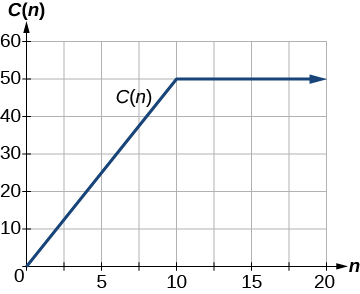
Working with a Piecewise Function
A cell phone company uses the function below to determine the cost, in dollars for gigabytes of data transfer.
Find the cost of using 1.5 gigabytes of data and the cost of using 4 gigabytes of data.
Solution
To find the cost of using 1.5 gigabytes of data, we first look to see which part of the domain our input falls in. Because 1.5 is less than 2, we use the first formula.
To find the cost of using 4 gigabytes of data, we see that our input of 4 is greater than 2, so we use the second formula.
Analysis
The function is represented in Figure 24. We can see where the function changes from a constant to a shifted and stretched identity at We plot the graphs for the different formulas on a common set of axes, making sure each formula is applied on its proper domain.

Graphing a Piecewise Function
Sketch a graph of the function.
Solution
Each of the component functions is from our library of toolkit functions, so we know their shapes. We can imagine graphing each function and then limiting the graph to the indicated domain. At the endpoints of the domain, we draw open circles to indicate where the endpoint is not included because of a less-than or greater-than inequality; we draw a closed circle where the endpoint is included because of a less-than-or-equal-to or greater-than-or-equal-to inequality.
Figure 25 shows the three components of the piecewise function graphed on separate coordinate systems.

Now that we have sketched each piece individually, we combine them in the same coordinate plane. See Figure 26.
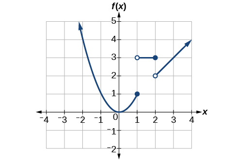
Analysis
Note that the graph does pass the vertical line test even at and because the points and are not part of the graph of the function, though and are.
Key Concepts
- The domain of a function includes all real input values that would not cause us to attempt an undefined mathematical operation, such as dividing by zero or taking the square root of a negative number.
- The domain of a function can be determined by listing the input values of a set of ordered pairs. See Example 1.
- The domain of a function can also be determined by identifying the input values of a function written as an equation. See Example 2, Example 3, and Example 4.
- Interval values represented on a number line can be described using inequality notation, set-builder notation, and interval notation. See Example 5.
- For many functions, the domain and range can be determined from a graph. See Example 6 and Example 7.
- An understanding of toolkit functions can be used to find the domain and range of related functions. See Example 8, Example 9, and Example 10.
- A piecewise function is described by more than one formula. See Example 11 and Example 12.
- A piecewise function can be graphed using each algebraic formula on its assigned subdomain. See Example 13.
Section Exercises
Verbal
Why does the domain differ for different functions?
Solution
The domain of a function depends upon what values of the independent variable make the function undefined or imaginary.
How do we determine the domain of a function defined by an equation?
Explain why the domain of is different from the domain of
Solution
There is no restriction on for because you can take the cube root of any real number. So the domain is all real numbers, When dealing with the set of real numbers, you cannot take the square root of negative numbers. So -values are restricted for to nonnegative numbers and the domain is
When describing sets of numbers using interval notation, when do you use a parenthesis and when do you use a bracket?
How do you graph a piecewise function?
Solution
Graph each formula of the piecewise function over its corresponding domain. Use the same scale for the -axis and -axis for each graph. Indicate inclusive endpoints with a solid circle and exclusive endpoints with an open circle. Use an arrow to indicate or Combine the graphs to find the graph of the piecewise function.
Algebraic
For the following exercises, find the domain of each function using interval notation.
Solution
Solution
Solution
Solution
Solution
Solution
Solution
Solution
Solution
Solution
Find the domain of the function by:
- ⓐ using algebra.
- ⓑ graphing the function in the radicand and determining intervals on the x-axis for which the radicand is nonnegative.
Graphical
For the following exercises, write the domain and range of each function using interval notation.
![Graph of a function from (2, 8].](../../media/CNX_Precalc_Figure_01_02_202-95dc.jpg)
Solution
domain: range
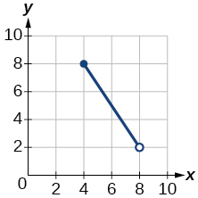
![Graph of a function from [-4, 4].](../../media/CNX_Precalc_Figure_01_02_204-d2ad.jpg)
Solution
domain: range:
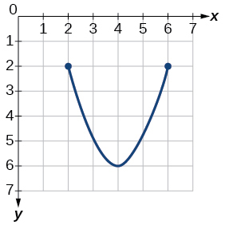

Solution
domain: range:
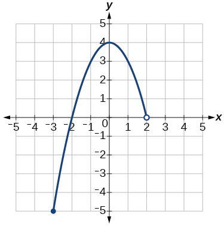
![Graph of a function from (-infinity, 2].](../../media/CNX_Precalc_Figure_01_02_208-7f09.jpg)
Solution
domain: range:

![Graph of a function from [-6, -1/6]U[1/6, 6]/.](../../media/CNX_Precalc_Figure_01_02_210-a5dd.jpg)
Solution
domain: range:


Solution
domain: range:
For the following exercises, sketch a graph of the piecewise function. Write the domain in interval notation.
Solution
domain:
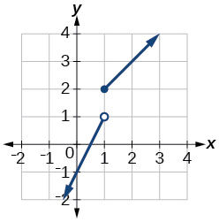
Solution
domain:

Solution
domain:
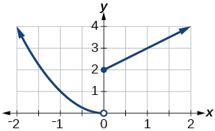
Solution
domain:

Numeric
For the following exercises, given each function evaluate and
Solution
For the following exercises, given each function evaluate and
Solution
Solution
For the following exercises, write the domain for the piecewise function in interval notation.
Solution
domain:
Technology
Graph on the viewing window and Determine the corresponding range for the viewing window. Show the graphs.
Solution
![Graph of the equation from [-0.5, -0.1].](../../media/CNX_Precalc_Figure_01_02_221.jpg)
window: range:
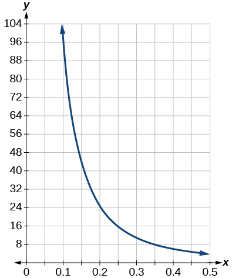
window: range:
Graph on the viewing window and Determine the corresponding range for the viewing window. Show the graphs.
Extension
Suppose the range of a function is What is the range of
Solution
Create a function in which the range is all nonnegative real numbers.
Create a function in which the domain is
Solution
Many answers. One function is
Real-World Applications
The height of a projectile is a function of the time it is in the air. The height in feet for seconds is given by the function What is the domain of the function? What does the domain mean in the context of the problem?
The cost in dollars of making items is given by the function
- ⓐ The fixed cost is determined when zero items are produced. Find the fixed cost for this item.
- ⓑ What is the cost of making 25 items?
- ⓒ Suppose the maximum cost allowed is $1500. What are the domain and range of the cost function,
Analysis
Figure 22 represents the function
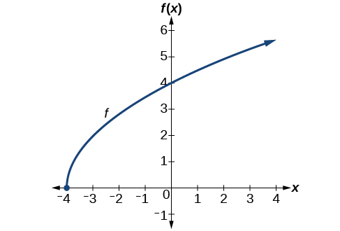